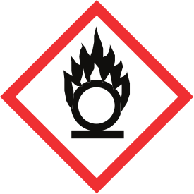
9 + 1WHMIS set + environment
3SVG · PNG · EPS formats
7Official source PDFs
Recognize the symbol.
Read the whole message.
A pictogram alerts you to a type of hazard. The label and safety data sheet (SDS) explain the particular product and its precautions. The same work area can also have machine warnings, traffic signs and emergency signs; each has a different purpose.
In an asphalt crew, check the actual products used for the task: fuels, cleaners, release agents and other supplied materials. Do not assign a WHMIS classification from the word “asphalt”, a container colour or a familiar brand.
Some WHMIS hazard classes and categories have no required pictogram. No pictogram does not mean no hazard. Check the product identifier, complete label and SDS Section 2.
This classroom material develops WHMIS understanding. The employer also provides training for the actual hazardous products, tasks, controls and emergency procedures at the workplace.
The pictogram library
Official CCOHS artwork, retained in its standard form. SVG files are faithful vector conversions of the supplied EPS artwork. Frame, symbol and colours have not been redesigned.


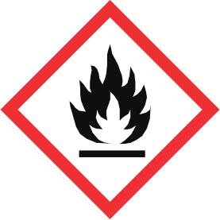


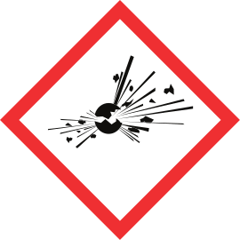


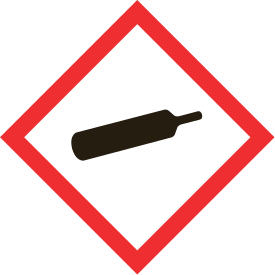


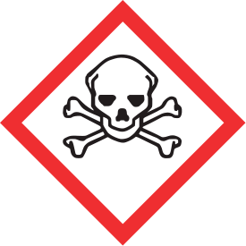


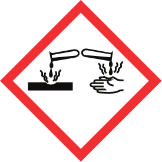


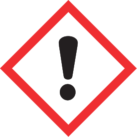


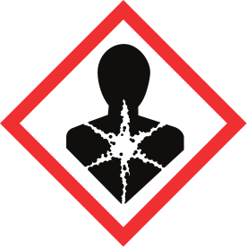


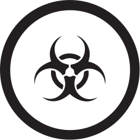


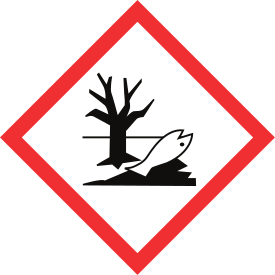


Canadian Centre for Occupational Health and Safety. (n.d.). WHMIS pictograms [Pictogram kit]. Official download page. Accessed 30 October 2026. Meanings above are concise teaching descriptions; the 2026 pictograms fact sheet gives the classes and categories.
Three sources of information
- Identify
Match the product name on container, label and SDS. - Read
Read hazard statements and precautions, not just the pictogram. - Locate
Find task-specific information in the SDS and workplace procedures. - Check
Resolve missing or conflicting information with the designated person before the task.
Supplier label
Look for the product identifier, initial supplier identifier, applicable pictograms, signal word, hazard statements and precautionary statements. Required supplemental information may also apply. Supplier label information is provided in English and French. “Danger” and “Warning” are signal words; their use depends on classification.
Workplace label
A workplace label generally contains the product identifier matching the SDS, safe-handling information and a statement that the SDS is available. Requirements and limited exceptions for transferred containers depend on the circumstances and jurisdiction. Use the employer’s procedure; do not treat “only a small amount” as a reason to leave a shared container unidentified.
Find the information in an SDS
An SDS has 16 section headings. Read the current SDS for the exact product. A similar name, an old screenshot or a different supplier’s sheet is not a confirmed match.
| Question | Start here | Keep checking |
|---|---|---|
| Which product and supplier? | 1 · Identification | Label and actual container |
| Which hazards and label elements? | 2 · Hazard identification | Full statements and classification |
| What is in it? | 3 · Composition/information on ingredients | Applicable disclosure information |
| First aid, fire or spill? | 4 · First-aid measures; 5 · Fire-fighting measures; 6 · Accidental release measures | Workplace emergency procedure and trained response |
| Handling, storage and exposure controls? | 7 · Handling and storage; 8 · Exposure controls/personal protection | Task, exposure and workplace controls |
| Properties, reactions and health effects? | 9 · Physical/chemical properties; 10 · Stability/reactivity; 11 · Toxicological information | Conditions, routes and limits |
| Environment, disposal, transport and rules? | 12 · Ecological; 13 · Disposal; 14 · Transport; 15 · Regulatory information | Headings are required; these sections’ content is not mandatory under the HPR. Other requirements can apply. |
| When was the SDS prepared or revised? | 16 · Other information | Revision and supplier updates |
Teaching summary from CCOHS (2026), WHMIS—Labels and WHMIS—Safety Data Sheet (SDS). Consult the complete sheets for conditions and exceptions.
Machine warnings have their own context
The pages below show genuine CAT roller safety messages. Hot-surface and crush warnings describe equipment hazards. A chemical pictogram on a product label describes that product’s classification. Keep the message with its location, machine and complete instruction.
| Example | Where to look | What to preserve |
|---|---|---|
| Hot surface | CAT-10, PDF page 9, safety message 4 | Location near exhaust outlet, illustration and full burn warning |
| Crush hazard | CAT-10, PDF page 10, messages 5 and 6 | Articulation location, machine movement and frame-lock context |
| ROPS warning | CAT-10, PDF page 10, message 7 | Complete do-not-weld-or-drill warning and model context |
Use the exact machine’s warning labels and manual during supervised training. The reproduced pages are from M0130633-02 for its listed CB2.5 GC, CB2.7 GC and CC2.7 GC serial ranges. These images are classroom references, not replacement machine decals.
CAT roller warnings · source page 9

Caterpillar. (2022). CB2.5 GC, CB2.7 GC, CC2.7 GC Utility Compactors — Operation and Maintenance Manual (M0130633-02 (August 2022)), PDF p. 9. Full source page. Original illustration reproduced as a crop; labels unchanged. This reproduction retains the complete page.
CAT roller warnings · source page 10
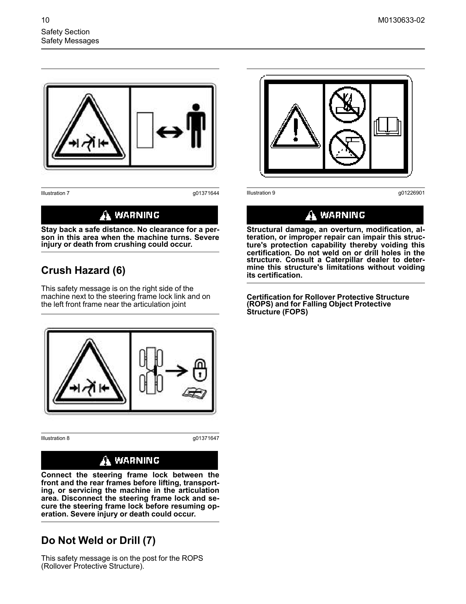
Caterpillar. (2022). CB2.5 GC, CB2.7 GC, CC2.7 GC Utility Compactors — Operation and Maintenance Manual (M0130633-02 (August 2022)), PDF p. 10. Full source page. Original illustration reproduced as a crop; labels unchanged. This reproduction retains the complete page.
Source shelf
The five CCOHS sheets below are the current teaching sources in this dated collection. The WorkSafeBC books remain useful B.C. background, with their 2019 editions visible.
- Canadian Centre for Occupational Health and Safety. (2026). WHMIS — Pictograms. 7 pages. Current CCOHS fact sheet reflecting the December 2022 Hazardous Products Regulations amendments. Original download.
- Canadian Centre for Occupational Health and Safety. (2026). WHMIS — General. 9 pages. Current CCOHS fact sheet reflecting the December 2022 Hazardous Products Regulations amendments. Original download.
- Canadian Centre for Occupational Health and Safety. (2026). WHMIS — Labels. 11 pages. Current CCOHS fact sheet reflecting the December 2022 Hazardous Products Regulations amendments. Original download.
- Canadian Centre for Occupational Health and Safety. (2026). WHMIS — Safety Data Sheet (SDS). 13 pages. Current CCOHS fact sheet reflecting the December 2022 Hazardous Products Regulations amendments. Original download.
- Canadian Centre for Occupational Health and Safety. (2026). WHMIS — Education and Training. 6 pages. Current CCOHS fact sheet reflecting the December 2022 Hazardous Products Regulations amendments. Original download.
- WorkSafeBC. (2019). WHMIS 2015: At Work. 104 pages. Historical B.C. explanatory book. Predates the December 2022 amendments; use the current CCOHS sheets and current B.C. requirements for changes. Original download.
- WorkSafeBC. (2019). WHMIS 2015: The Basics. 68 pages. Historical B.C. explanatory book. Predates the December 2022 amendments; use the current CCOHS sheets and current B.C. requirements for changes. Original download.
Unchanged official CCOHS pictogram ZIP · Source hashes and conversion record · Current WorkSafeBC Part 5 requirements